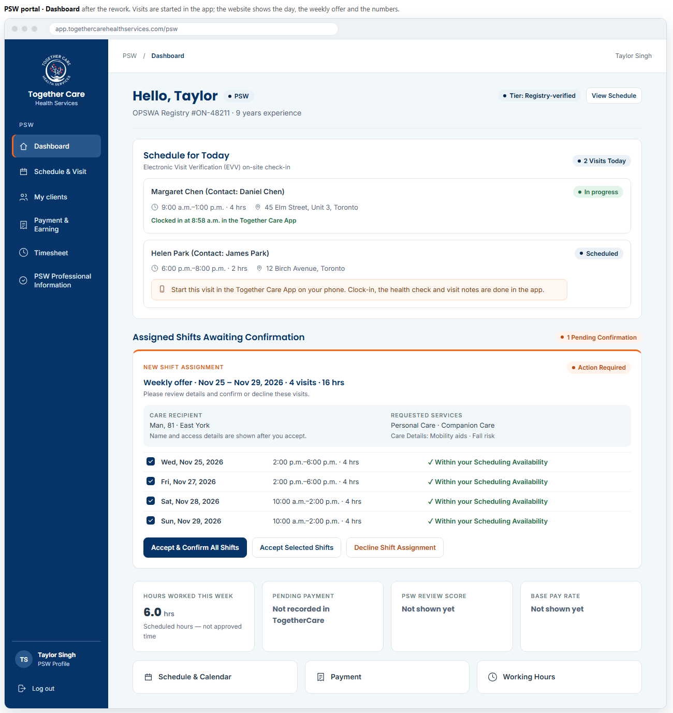

PSW portal
For the personal support worker. Visits are still started in the app on the PSW's phone, where clock-in and visit notes are done.
Dashboard


- Weekly offer: see all of a client's visits for the week together. Accept all, or only the ones that fit.
- Each visit shows whether it is within your Scheduling Availability.
- Today's visits say clearly: start this visit in the Together Care App on your phone.
Schedule & Visit


- Scheduling Availability for the next 7 days, in 4, 8 or 12-hour windows, the same as the app.
- A window can be changed until 12 hours before it starts, in both places.
- The month calendar keeps its colours: confirmed, current and completed visits.